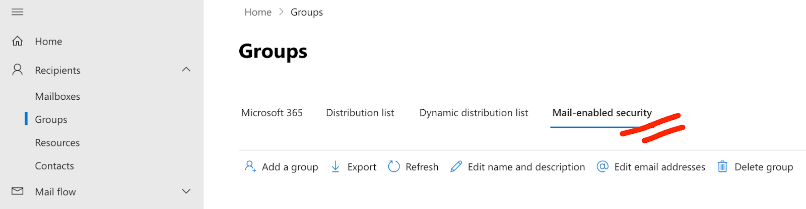

Microsoft 365
Capture Outlook and Teams engagement without rep behavior change.
Connection
Your Microsoft 365 administrator should authorise the Nektar app for your organization. The administrator may also follow the steps below to restrict Nektar to specific users.
Provide the email address of your Microsoft 365 administrator to start the authorization process.
Restrict Nektar to specific users
You must have admin privileges to your Microsoft 365 organization to do this.
- Create a "Mail-enabled security" group in Microsoft Admin Centre. Note the group's email address.

- Add the users you want Nektar to access as the members of that group. Ensure that the admin is different from all the members.
- On your Windows PC, launch PowerShell.
- Login to ExchangeOnline with your admin credentials.
Connect-ExchangeOnline -UserPrincipalName <your-email-address> - Add an access policy restricting the Nektar app to the group you created.
New-ApplicationAccessPolicy -AppId 5ec97ac5-1665-4dff-8357-43d284a0b3a5 -PolicyScopeGroupId <group-email-address> -AccessRight RestrictAccess -Description "Nektar access policy"
Access to Teams
- On your Windows PC, launch PowerShell.
- Login to ExchangeOnline with your admin credentials.
Connect-ExchangeOnline -UserPrincipalName <your-email-address> - Connect to Teams.
Connect-MicrosoftTeams - Add an access policy to grant Nektar access to Teams.
New-CsApplicationAccessPolicy -Identity Policy-To-Access-Meetings-Application-Access -AppIds "5ec97ac5-1665-4dff-8357-43d284a0b3a5" -Description "Access meeting on behalf of user" Grant-CsApplicationAccessPolicy -PolicyName Policy-To-Access-Meetings-Application-Access -Global
OAuth scopes
This is under-the-hood technical detail that's not necessary for using Nektar.
Scopes control what actions Nektar may take. Nektar requires the following OAuth scopes to operate correctly.
Sync
Nektar's Microsoft 365 sync system reads email messages and calendar events every 10–15 minutes, and the list of users on your workspace every 24 hours. You must enable sync for individual MS365 users in the Users section.
The sync table displays:
- the time the most recent message or event was synced
- a sync health icon that can be clicked for more information
- toggles to enable or disable sync globally
Sync health icons may indicate the following states:
Properties synced
APIs used
This is under-the-hood technical detail that's not necessary for using Nektar.
Nektar uses the Microsoft Graph API.